IITP · NIPA 공개SW R&D로 의학연구용 분석 패키지 · SaaS · 웹 · 튜토리얼까지 단계적으로 구축
정밀의료 연구에서의 멀티오믹스 분석 전략과 실제 적용
김진섭
2026-06-13
목차
I. 자기소개 · R 패키지
II. 수행했던 멀티오믹스 분석
III. 공단·심평원 데이터 분석
자기소개
차라투(주) — Zarathu Co., Ltd
- 의학연구지원
- R 패키지 개발 및 교육
- 인턴십 — 연세대 학부생, 의대생·전공의 30명 이상
약력
- 2003–2009 성균관의대 졸업
- 2010–2013 예방의학 전문의 · 서울대 보건대학원
- 2010–2018 보건학 박사수료(유전체역학) · 서울대 보건대학원
- 2014–2016 책임연구원 · 삼성전자 DMC연구소·무선사업부
- 2018–현재 대표 · 차라투(주)
기타 활동
- 2021–2022 겸임교수 · 성균관대 바이오헬스규제과학과 — R 빅데이터분석 강의
- 2023–현재 Statistical Editor · Journal of Cardiovascular Intervention
- 2025–현재 학술이사(임상시험분과) · 신경약물임상시험학회
- 2026–현재 편집위원 · 생물정신의학회
직접 개발한 R 패키지 — Statgarten 오픈소스 생태계
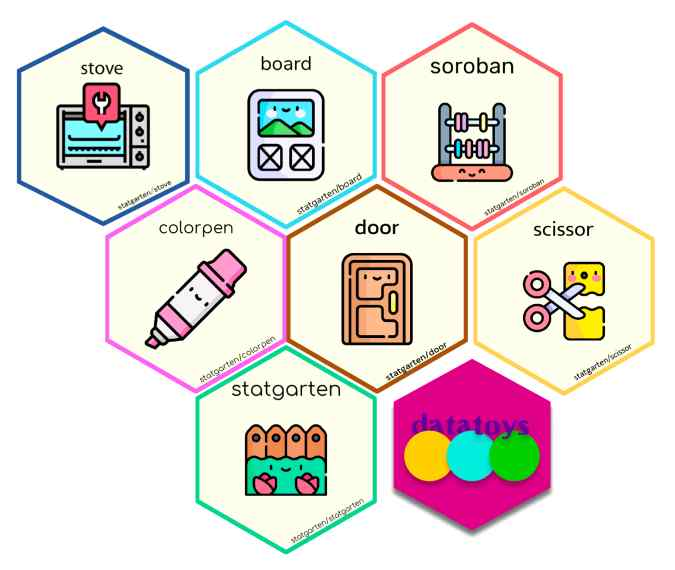
Statgarten 통계패키지 생태계
정부 R&D로 단계적 고도화한 오픈소스 자산
| 구분 | 항목 | 내역 |
|---|---|---|
| R 패키지 | 통계 분석 함수 | 111종 |
| 공개 SaaS | openstat.ai | 무료 운영 |
| R&D 수행 | IITP·NIPA 공개SW | 3건 |
| 지식재산권 | 특허 등록 | 2건 |
| 지식재산권 | SW 저작권 | 1건 |
| 연구 지원 | 분석 지원 논문 | 200편 |
| 임상시험 | 데이터 분석 건수 | 50건 |
의학논문에 쓰이는 거의 모든 분석을 포함한 R 패키지 — 분석 모듈을 GUI와 통합해 1~2줄 코드로 분석 웹 구축 가능
4대 대표 패키지 — jskm · jstable · jsmodule · splineplot
대표 R 패키지 4종 · CRAN 등록
| 패키지 | 기능 | GitHub |
|---|---|---|
| jskm | KM plot 논문용 그림 | jinseob2kim/jskm |
| jstable | Regression 논문용 테이블 | jinseob2kim/jstable |
| jsmodule | 분석기능 모듈화 (저코드) | jinseob2kim/jsmodule |
| splineplot | 비선형 모델 시각화 | jinseob2kim/splineplot |
누적 다운로드
| 지역 | 다운로드 | 비고 |
|---|---|---|
| 글로벌 누적 | 30만 회+ | CRAN + GitHub |
| 일본 | 3만 회 | 블로그 리뷰 |
| 중국 | 7만 회 | 영상 후기 |
본 패키지 활용 논문 200편 (NEJM · Lancet · JAMA 등 최상위 저널 포함), 임상 데이터 분석 50건
패키지 화면 (jskm · jstable)
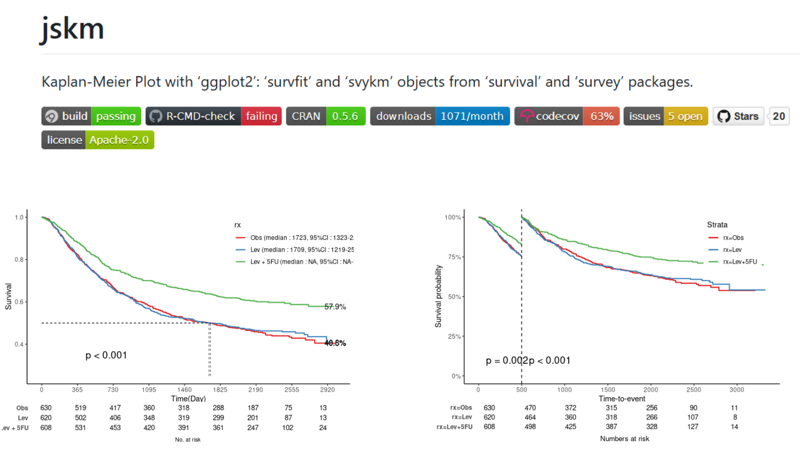
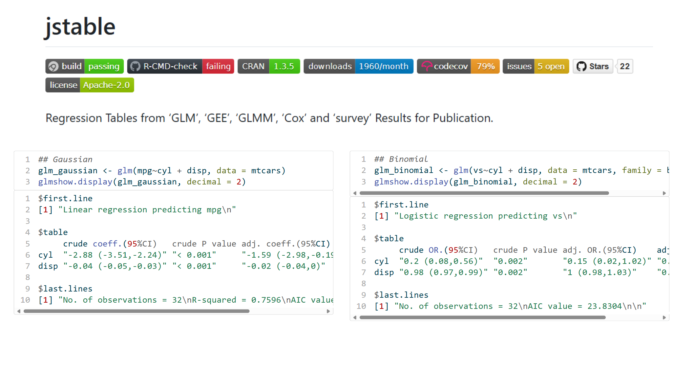
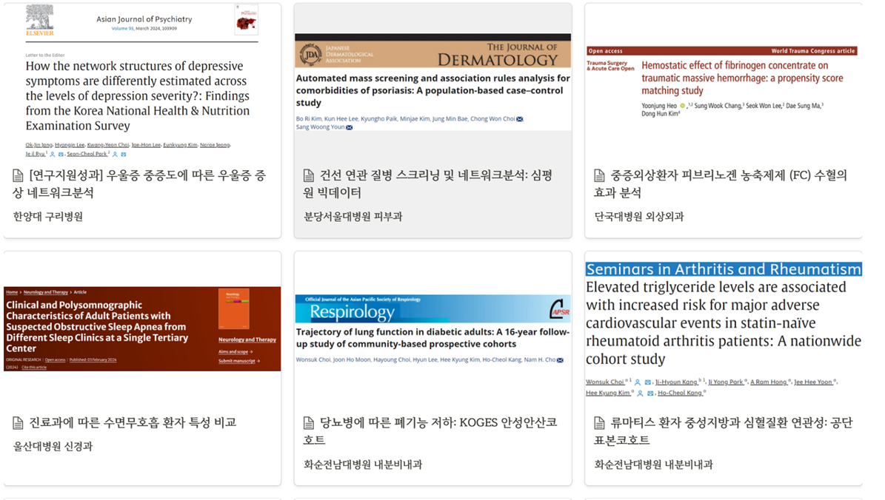
jsmodule — 저코드 분석 웹 · AI Assistant
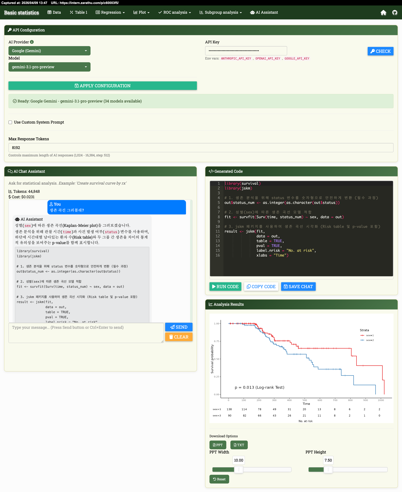
jsmodule 2.0.0 — AI Assistant 시범 탑재 / openstat.ai 운영 중
이미 작동하는 AI agent 초기 버전
jsmodule 저코드 분석모듈 엔진에 AI Assistant 기능을 시범 탑재 — “R 패키지의 AI agent화” 초기 구현 사례
| 구분 | 구현 기능 |
|---|---|
| LLM 연동 | 질의 기반 분석 코드·통계 절차·시각화 생성·수정·실행 |
| 컨텍스트 활용 | Data Manager 컨텍스트로 이전 표·그림 참조하는 후속 질의 |
| 보안 설계 | row-level 데이터 미포함 / 샌드박스 / 변수명 일반화 |
| 출력 포맷 | 표·그림·flextable · PPTX · Word · Excel · TXT 내보내기 |
코드 생성을 넘어 분석 설계 · 데이터 검증 · 통계 실행 · 보고서까지 연결하는 표준화 분석모듈 기반 AI agent
멀티오믹스 데이터와 분석의 특징
일반 통계(회귀·t검정)를 그대로 적용할 수 없는 데이터 — 데이터 특성마다 전용 분석 전략 필요
① 고차원 (p ≫ n) — 수만~수백만 마커 vs 수백 표본 → 정규화(Lasso·Elastic Net)·차원축소(PCA·MOFA)
② 다중공선성 — LD·공발현·pathway로 변수 간 강한 상관 → 네트워크·모듈 기반 통합(xMWAS·WGCNA)
③ 다중검정 — 수백만 검정 동시 수행 → genome-wide significance(5 × 10⁻⁸)·FDR 보정
④ 데이터 이종성 — 계층별 분포·스케일 상이(SNP·count·beta·log-normal) → 정규화 후 단계별 통합
⑤ 기술적 잡음·교란 — batch effect·집단구조가 신호 왜곡 → ComBat·SVA, PC 보정·deconvolution
⑥ 사전지식·공개데이터 — GWAS Catalog·GTEx·KEGG·UK Biobank 활용 → enrichment·MR·imputation
※ p ≫ n: 변수(마커) 수가 표본 수를 크게 초과하는 구조 / MR: Mendelian Randomization (인과성 추론)
① 고차원 — 변수가 표본을 압도 (p ≫ n)
현상
- 측정 변수 p — SNP 50만+ · CpG 85만 · 전사체 2만+ → 수만~수백만
- 표본 n — 수십~수백 수준
- p가 n을 압도 → 회귀 해 불안정 · 과적합 필연
차원의 저주
- 변수↑ → 표본 간 거리 희박, 우연 상관 급증
- 최소제곱(OLS) — p > n이면 유일 해 부재
분석 전략
- 벌점화 회귀 — Lasso·Ridge·Elastic Net: 변수 선택 + 계수 축소
- 차원축소 — PCA·PLS·MOFA: 잠재 인자로 압축
- 사전 필터링 — 분산·연관 기반 screening
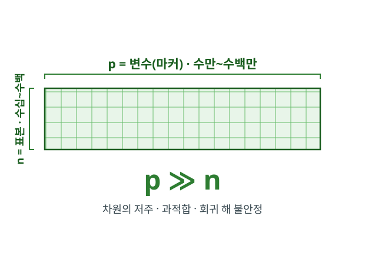
차원축소 — PLS · MOFA
- PLS(부분최소제곱) — 결과변수와 가장 관련 큰 방향으로 변수를 압축하는 지도학습형 차원축소 (PCA는 결과를 보지 않는 비지도)
- MOFA(Multi-Omics Factor Analysis) — 여러 오믹스를 동시에 설명하는 공통 잠재인자(factor)를 찾는 비지도 통합 기법
② 다중공선성 — 변수 간 강한 상관 구조
상관의 원천
- 유전 — 연관불균형(LD): 인접 SNP 블록 단위 동시 유전
- 전사 — 공발현 모듈: 같은 경로 유전자 동조 변동
- 단백·대사 — pathway 내 강한 양/음 상관
문제
- 회귀계수 분산 폭증(VIF↑) · 부호 역전 · 해석 불가
- 인과 변수 식별 불가(non-identifiability)
분석 전략
- 모듈·네트워크 통합 — WGCNA · xMWAS
- Group Lasso · 주성분 회귀 — 상관 그룹 단위 처리
- LD clumping · fine-mapping — 인과 변이 후보 축소
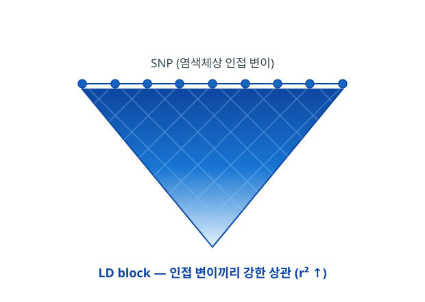
Lasso vs Group Lasso
- Lasso — 계수를 하나씩 0으로: LD block에서 SNP 하나만 임의 선택(불안정)
- Group Lasso — 묶은 그룹(LD block·pathway)을 통째로 in/out: 생물학적 단위 유지로 안정적
③ 다중검정 — 수백만 가설의 동시 검정
규모와 위험
- GWAS 50만~1,000만 SNP · EWAS·DEG 수만 부위 동시 검정
- 100만 검정 × α 0.05 = 5만 우연 양성 → 보정 없이 해석 불가
보정 방법
- Bonferroni — α/m: GWAS 표준 5 × 10⁻⁸ (= 0.05 / 10⁶)
- FDR(Benjamini–Hochberg) — 발견 중 거짓 비율 통제, 탐색 단계 적합
- effective test 수 · 순열검정 — LD 상관 반영
진단
- QQ plot · genomic inflation(λ) — 체계적 편향 점검
- 보정 통과 신호만 후속 통합 분석
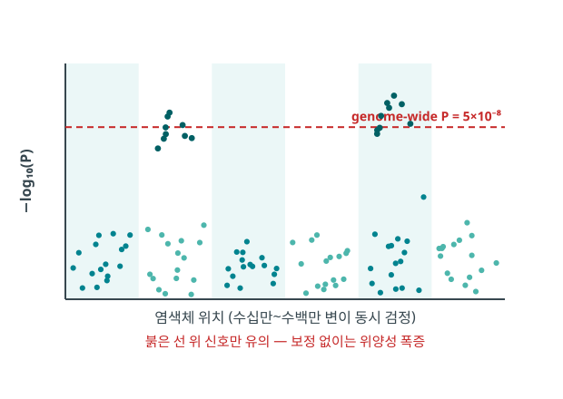
④ 데이터 이종성 — 계층마다 다른 분포·스케일
계층별 데이터 성격
- 유전형 — 0/1/2 범주(이산)
- RNA-seq — count · 과분산 → 음이항
- 메틸화 — β값 0~1 경계(bounded)
- 단백·대사체 — 연속 · 우편향 → log 정규
- 마이크로바이옴 — 합성 데이터, 합 = 1 제약
문제
- 단위·분산·결측 구조 상이 → 단순 결합 시 큰 스케일 계층이 지배
분석 전략
- 계층별 변환·정규화 — VST · log · CLR
- 통합 시점 — Early(연결) · Intermediate(MOFA 잠재인자) · Late(결과 통합)
- 계층별 imputation — 결측 구조 반영
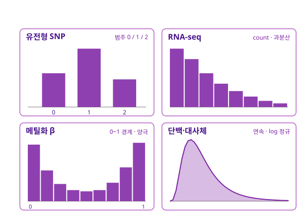
④ 데이터 이종성 — 변환·정규화 (VST · log · CLR)
“큰 스케일 계층이 지배”는 lasso만의 문제가 아님 — 거리 기반(PCA·클러스터링·kNN) · 벌점 회귀(lasso·ridge) · 모든 통합 분석에 공통되는 전처리 문제
계층별 변환 — 분포가 다르니 각자 맞는 변환
- VST — RNA-seq count: 평균↑ → 분산↑(과분산) 제거, 발현량 무관 분산 일정화 → 고발현 쏠림 방지
- log — 단백·대사체 우편향 연속값: 대칭(정규)에 가깝게, 큰 값 압축
- CLR — 마이크로바이옴 합성데이터(합 = 1): log(값 / 기하평균)으로 단순체 제약 해제
- z-score — 변환 후 계층별 평균 0·분산 1로 스케일 정렬
결측 — 메커니즘이 계층마다 다름
- LOD 이하(대사체) — 검출한계보다 농도 낮으면 0이 아니라 “측정 안 됨”으로 빠짐. 값이 작아 빠진 것 = MNAR → LOD/2·left-censoring
- dropout(scRNA-seq) — 발현하는데 기술적으로 0으로 찍힘. 진짜 0과 구분 어려움 → zero-inflated·MAGIC
- 플랫폼별 — 칩·패널마다 재는 변수가 달라 특정 변수 통째 결측
- 대치 — KNN · MissForest · MICE (계층 특성에 맞게)
순서 원칙 — 계층별 변환·정규화·대치를 먼저, 통합은 그다음 (반대로 하면 스케일 큰 계층이 지배) / MNAR: 값 자체 때문에 결측되는 구조
④ 데이터 이종성 — 통합 시점 (Early · Intermediate · Late)
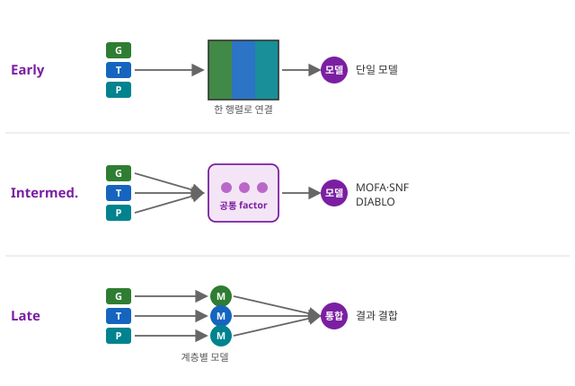
여러 오믹스를 언제 합치나
Early (조기·연결) — 모든 오믹스 변수를 한 행렬로 이어붙여 단일 모델. 가장 단순하나 p ≫ n·스케일 문제 최악 → 정규화·벌점 필수
Intermediate (중간·잠재인자) — 각 계층을 공통 잠재공간으로 보내 factor 수준에서 통합 (MOFA·SNF·DIABLO). 계층 구조 보존 + 교차신호 포착 → 보통 가장 무난
Late (후기·결과 통합) — 계층별로 따로 모델 → 예측·결과 결합(앙상블·메타분석). 계층 간 상호작용 놓칠 수 있음
⑤ 기술적 잡음·교란 — 신호를 가리는 변동
기술적 변동 (batch effect)
- 실험 런·플랫폼·시약 로트·측정일별 체계적 차이
- 생물학적 신호와 교락 시 가짜 발견 양산
생물학적 교란
- 집단 구조(ancestry) → GWAS 거짓 연관
- 조직 세포조성 → 메틸화·전사 신호 왜곡
분석 전략
- Batch 보정 — ComBat · SVA · RUV · removeBatchEffect
- 집단구조 — 주성분(PC) 공변량 · 혼합모형(LMM)
- 세포조성 — deconvolution 보정
- 설계 단계 — randomization · 균형 배치
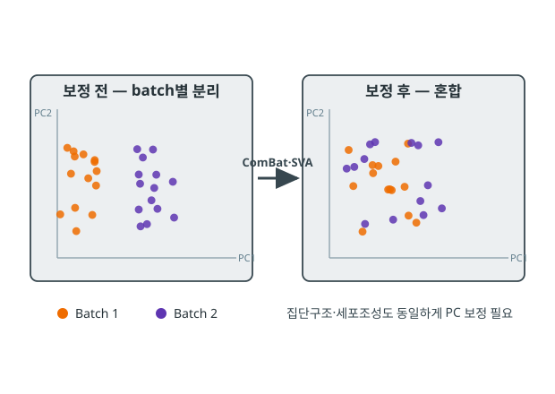
⑥ 사전지식·공개데이터 — 외부 reference 활용
공개 데이터·DB
- 변이–형질 — GWAS Catalog · UK Biobank · FinnGen
- 조절 — GTEx(eQTL) · ENCODE
- 경로·기능 — KEGG · Reactome · GO · MSigDB
- 참조 패널 — 1000 Genomes · TopMed
활용 분석
- Enrichment — GSEA·ORA: 개별 마커 → 생물학적 해석
- Mendelian Randomization — 공개 summary 통계로 인과 추론
- Imputation — 참조 패널로 미측정 변이 보강
- PRS — 외부 GWAS 가중치로 개인 위험도 산출
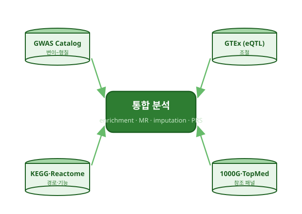
Case 1. 양극성장애 환자 약물 치료 반응 예측 및 신호 분석
삼성서울병원 정신건강의학과 백지현 교수님
분석 데이터
- 양극성장애 환자의 임상정보, 약물 반응 점수, proteomics, SNP, PRS을 포함한 다각적 멀티오믹스 데이터.
- Lithium과 Valproate 반응을 연속형 점수와 반응군 형태로 정의, 예측 성능 평가와 분자 신호 해석을 동일 프레임 내에 연결.
분석 목표 및 통계 분석
- 약물 반응 차이를 설명하는 임상·분자 결합 신호 탐색 후, 반응 예측에 기여하는 feature 축 도출을 위한 분석 설계.
- Table 1, linear/logistic regression로 기본 차이를 정리한 뒤, SNP-level GWAS, network analysis, LASSO, Random Forest로 확장 진행.
결과 및 산출물
- 반응군 비교표, SNP-단백체-임상 통합 네트워크, 변수 중요도 기반 예측 모델 구축,
[75% train / 25% test]분할과[10-fold CV]기준의 성능 비교 체계 정리.
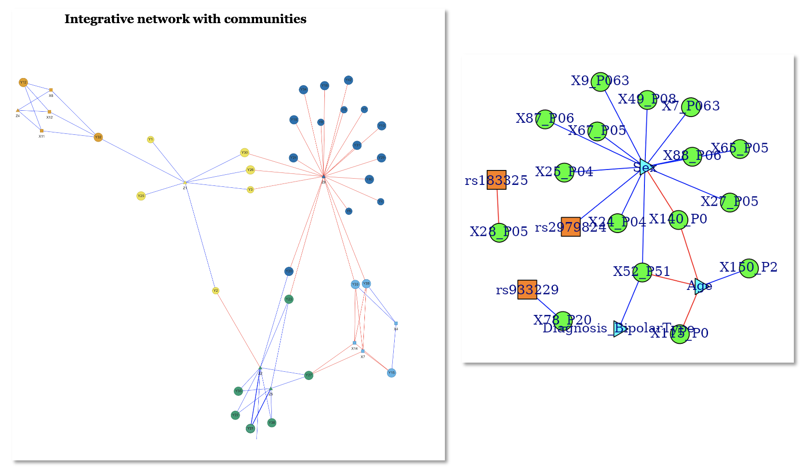
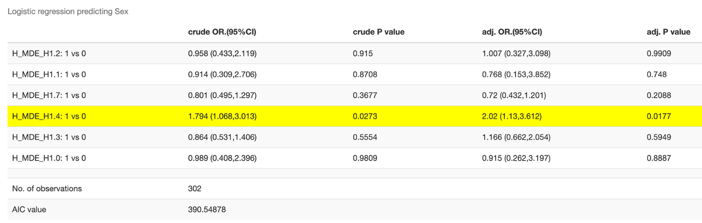
Case 1. 양극성장애 환자 약물 치료 반응 예측 및 신호 분석
삼성서울병원 정신건강의학과 백지현 교수님
분석 데이터
- 한국인 PRS summary statistics, phenotype, eQTL/mQTL, Brain-mMeta를 통합한 멀티오믹스 데이터.
- 단순 예측 score 비교를 넘어, lead SNP와 기능 후보 유전자를 다시 해석하기 위한 post-GWAS 구조 중심 데이터셋.
분석 목표 및 통계 분석
- ancestry-informed PRS 재산출을 통한 예측력 재점검 후, 기능적 근거가 더 설득력 있는 SNP-유전자 축 도출을 위한 재해석.
- PRScs, PRScsx로 trait별 score를 산출하고 logistic ROC로 성능 비교, 이후 SMR/HEIDI 기반으로 대안 SNP와 기능 후보 재평가.
결과 및 산출물
- PRS 비교표와 기능 후보 SNP 요약 자료를 정리하고, SLC25A12 gene-based SMR은
p_SMR = 0.381로 강한 지지 근거가 제한적이므로 대안 SNP 비교 중심의 해석.
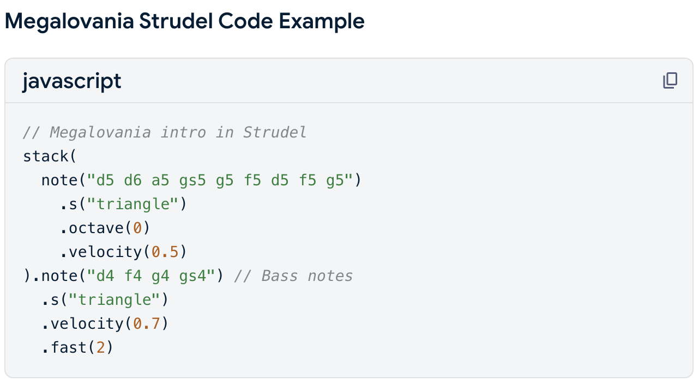
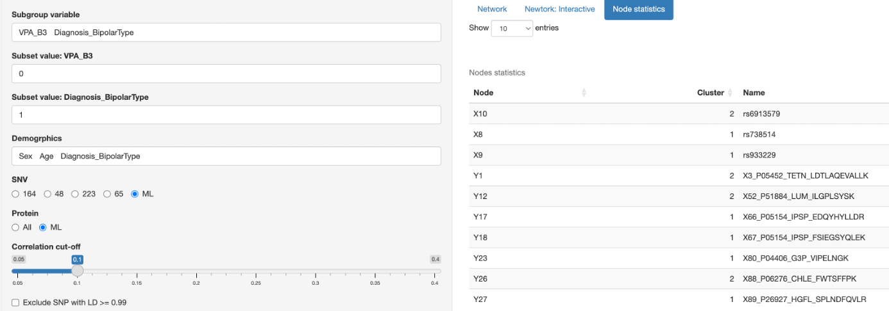
Case 1 보충 ①. 연구 배경·목표와 분석 데이터
삼성서울병원 정신건강의학과 백지현 교수님
연구 배경
- 양극성장애(bipolar disorder)는 유전 영향이 크고, lithium·valproate 같은 약물의 반응이 환자마다 크게 달라 미리 예측하기 어려움
- 유전·단백체·임상 정보를 함께 보면 반응 예측과 발병 기전 이해에 도움이 될 것으로 봄
두 갈래로 진행한 연구
- ⑴ 약물반응 예측 라인: 임상·단백체·유전 정보를 통합해 lithium·valproate 반응을 예측하는 모델을 구축함
- ⑵ 유전 위험도·기전 라인: 한국인 양극성장애 GWAS로 위험점수(PRS)를 만들고 위험 변이의 기능적 기전을 규명함
분석 데이터 ⑴ 약물반응 예측 (BOMICS 코호트)
- 임상 정보(나이·성별·진단 특성·동반질환 등)를 수집
- 단백체(proteomics): 치료 시점(T0·T1·T2)별 혈액 단백질과 그 변화량을 측정
- 유전 변이(SNP)와 다유전자 위험점수(PRS)를 함께 산출
- 결과 변수로 lithium·valproate 반응(반응 여부로도 구분)을 사용
분석 데이터 ⑵ 유전 위험도·기전 (한국인 BD GWAS)
- K-CHIP으로 양극성장애 환자·대조군의 유전체를 측정
- 대규모 메타 GWAS 요약통계(약 3만 명)를 활용
- 외부 공개 QTL 데이터(뇌 eQTL·mQTL)를 함께 사용
용어
- proteomics(단백체): 혈액 속 단백질을 한꺼번에 측정한 자료임
- SNP(Single Nucleotide Polymorphism, 단일염기다형성): 사람마다 다른 유전자 한 글자 차이를 뜻함
Case 1 보충 ②. 약물반응 예측 라인 (BOMICS)
삼성서울병원 정신건강의학과 백지현 교수님
방법: 임상·단백체·유전 통합
- Table 1·logistic regression으로 반응군과 비반응군의 기본 차이를 정리함
- SNP-level GWAS로 반응 연관 변이를, network analysis로 SNP·단백질·임상의 연결 구조를 탐색함
- LASSO·Random Forest로 예측 모델을 만들고, 75% 학습 / 25% 검증과 10-fold 교차검증으로 성능을 평가함
LASSO
- 많은 변수(SNP·단백질·임상) 중 예측에 중요하지 않은 변수의 계수를 0으로 눌러, 의미 있는 소수만 남기는 회귀 기반 머신러닝임
- 변수가 표본보다 많을 때 과적합을 막고, 핵심 예측 인자를 자동으로 골라줌
결과
- SNP·단백체·임상 통합 네트워크, 변수 중요도 기반 LASSO·Random Forest 예측 모델, ROC 탐색 Shiny 앱을 산출함
Case 1 보충 ③. 유전 위험도·기전 라인. SNP·GWAS
유전 위험도·기전 라인
- GWAS로 위험 변이를 찾고(이 장), PRS로 발병 위험을 점수화하며(보충④·⑤), SMR로 기전을 확인(보충⑥). 결과는 보충⑦에 정리.
삼성서울병원 정신건강의학과 백지현 교수님
SNP(Single Nucleotide Polymorphism, 단일염기다형성)
- 유전체의 한 염기 자리(A·T·G·C)에서 사람마다 염기가 달라지는 변이임. 사람 간 유전체는 약 99.9%가 동일하고, 개인 간 차이의 대부분이 SNP임
- 집단에서 minor allele(소수 대립유전자) 빈도가 일정 수준 이상으로 흔한 SNP을 분석에 사용함(거의 모두 같은 염기인 자리는 비교할 변이가 없어 제외)
- 과거에는 전장유전체를 다 읽지 못해 알려진 SNP만 칩(K-CHIP 등)으로 측정했고, 지금은 전장유전체(whole genome) 측정도 가능함
- 각 SNP에는 고유 rs 번호가 붙음(예: rs75776799). 유전형은 minor allele 개수로 0·1·2로 코딩함
GWAS(Genome-Wide Association Study, 전장유전체 연관분석)
- 수백만 개 SNP을 한꺼번에 훑어, 질병과 통계적으로 연관된 위치를 찾는 분석임
- 수백만 번 검정하므로, 우연한 양성을 막기 위해 매우 엄격한 기준(\(p < 5\times10^{-8}\))을 넘어야 유의하다고 봄
연관은 곧 인과가 아님
- 설령 어떤 SNP이 질병과 연관되더라도 그 유전자가 원인이라는 보장은 없음
- 바로 옆에 붙어(LD, 연관불평형) 함께 움직인 다른 유전자가 진짜 원인일 수 있음
- 이를 가려내기 위해 뒤의 SMR 분석이 필요함
Case 1 보충 ④. PRS (다유전자 위험점수)
삼성서울병원 정신건강의학과 백지현 교수님
PRS: 수천 개 변이의 효과를 더한 위험 점수
- 양극성장애는 한두 유전자가 아니라 수천 개 변이가 조금씩 위험을 더하는 질환임
- 대규모 GWAS에서 각 변이의 효과크기(β, 보통 로그 오즈비)가 이미 추정되어 있음
- 한 사람의 유전형을 변이마다 0·1·2(위험 대립유전자 개수)로 읽어, β를 곱해 모두 더하면 위험 점수가 됨
\[\text{PRS}=\sum_{i}\beta_i \, x_i \qquad (x_i = 0,1,2)\]
- \(\beta_i\)는 변이 \(i\)의 효과크기, \(x_i\)는 위험 대립유전자 개수임. 가중치 보정 없이 단순 합산하는 방식이 가장 기본형(classical) PRS이며, 뒤의 PRS-CS가 이를 개선함
예시: 변이 3개로 본 계산 (개념용)
| 변이 | β (로그 오즈비) | 유전형 | 기여 (β×개수) |
|---|---|---|---|
| 변이 1 | +0.30 | 2 | +0.60 |
| 변이 2 | +0.10 | 1 | +0.10 |
| 변이 3 | −0.20 | 0 | 0.00 |
| 합계 (PRS) | +0.70 |
- 실제로는 변이 수천 개에서 수만 개를 같은 방식으로 더함
- 점수가 높을수록 그 질환의 유전적 소인이 크다고 해석함
Case 1 보충 ⑤. PRS 정확도를 높이는 PRS-CS·PRS-CSx
삼성서울병원 정신건강의학과 백지현 교수님
단순 합산의 한계와 보정
- 가까이 있는 SNP들은 서로 비슷한 정보를 담음(LD, Linkage Disequilibrium, 연관불평형). 단순 합산은 이 중복을 과다 반영함
- 표준 참조 유전체(reference panel)로 LD 구조를 보정해야 점수가 정확해짐
PRS-CS · PRS-CSx (Python 도구)
- PRS-CS(Continuous Shrinkage): 베이지안(Bayesian) 회귀로 각 SNP 효과에 연속 축소 사전분포(continuous shrinkage prior)를 적용해 LD 참조패널 기반으로 효과크기를 다시 추정함. 효과가 약한 변이는 0에 가깝게 강하게 줄이고 뚜렷한 변이는 덜 줄여 잡음을 억제함
- PRS-CSx: PRS-CS를 여러 인종(동아시아·유럽) GWAS에 동시에 적용하도록 확장함. 인종별 효과는 따로 추정하되 축소 사전분포를 공유해, 유럽처럼 큰 GWAS 정보를 한국인 등 작은 집단에 전달해 비유럽 예측력을 높임
- 조현병 GWAS 대조군과 양극성장애 표본이 겹친 문제를 확인해, 겹친 한국인 표본(약 1,180명)을 빼고 재계산함. 성능은 ROC-AUC로 평가(1에 가까울수록 잘 구분)
연속 축소 사전분포 (continuous shrinkage prior)
각 SNP 효과 \(\beta_j\)에 0 중심 사전분포를 두고, SNP마다 축소 강도를 데이터로 정함
\[\beta_j \sim \mathcal{N}(0,\ \phi\,\psi_j)\]
\(\phi\)는 전체 축소 정도, \(\psi_j\)는 SNP별 축소 정도임. 효과가 약한 SNP은 \(\psi_j\)가 작아 0에 가깝게 강하게 줄이고, 뚜렷한 SNP은 덜 줄임
Case 1 보충 ⑥. 기전 규명: SMR·HEIDI
삼성서울병원 정신건강의학과 백지현 교수님
SMR: 변이로 유전자·질병의 인과를 추정
- SMR(Summary-data-based Mendelian Randomization)은 위험 변이가 유전자 발현(eQTL)·메틸화(mQTL)에 주는 영향을 매개로 하여, 어떤 유전자가 질병의 원인 쪽인지 추정함
- 유전 변이는 태어날 때 정해져, 질병에 걸린 뒤에 변이가 바뀌지는 않음. 그래서 변이를 출발점으로 삼으면 질병이 거꾸로 변이를 바꿨을 가능성이 없어, 변이가 질병의 원인인지를 한 방향으로만 따질 수 있음
HEIDI: 진짜 표적인지 거르는 검정
- HEIDI는 그 연관이 단지 옆에 붙어(LD) 우연히 같이 움직인 것인지 가려냄. 즉 “이 유전자가 진짜냐, 근처 유전자가 진짜냐”를 판정함
필요한 외부 데이터
- eQTL(expression Quantitative Trait Locus, 발현 양적형질 유전자좌): 변이가 유전자 발현량에 주는 영향(뇌 BrainMeta 등)
- mQTL(methylation Quantitative Trait Locus, 메틸화 양적형질 유전자좌): 변이가 DNA 메틸화에 주는 영향(동아시아 mQTL 메타분석)
GWAS에서 연관이 나타난 유전자가 실제 기능 표적과 다를 수 있어, SMR로 표적을 다시 확인하는 것이 중요함
Case 1 보충 ⑦. 결과: 유전 위험도·기전 라인
삼성서울병원 정신건강의학과 백지현 교수님
PRS 위험점수 성능 (GWAS 인종별)
| 위험점수 | 인종 | OR | R² | AUROC |
|---|---|---|---|---|
| 양극성 | 동아시아 | 1.21 | 0.011 | 0.552 |
| 양극성 | 유럽 | 1.58 | 0.061 | 0.627 |
| 양극성 | 다인종 | 1.63 | 0.070 | 0.632 |
- OR은 위험점수가 1 표준편차 높아질 때 발병 위험(오즈)이 몇 배로 커지는지를 나타냄
- R²(Nagelkerke)은 위험점수가 발병 여부의 변동을 설명한 비율임
- AUROC은 환자와 대조군을 한 명씩 뽑았을 때 환자의 점수가 더 높을 확률임(0.5는 무작위, 1은 완벽)
- 유럽·다인종 GWAS 기반 점수가 동아시아 단독보다 한국인 위험을 더 잘 설명했음. 동아시아 점수의 설명력이 낮은 것은 인종 간 유전구조가 달라서가 아니라 주로 동아시아 GWAS 표본이 유럽의 약 1/4로 작기 때문임
GWAS 핵심 발견: 새 위험 변이 1곳
- 전장유전체 유의 변이 rs75776799 1곳을 발견함(SLC25A12 인트론, P = 2.45×10⁻⁹, OR = 2.65). 기존 양극성장애 연구에서 보고된 적 없는 새 위치임
- SLC25A12는 미토콘드리아 칼슘 운반 단백질을 만드는 유전자로, 미토콘드리아 기능이 발병에 관여할 가능성을 시사함
SMR·HEIDI 기전 분석: 인과 유전자 미확정
- 뇌 eQTL·동아시아 mQTL 기반 SMR에서 다중검정 보정 후 유의한 인과 유전자는 없었음(eQTL 7개 유전자 모두 p_SMR > 0.05)
- mQTL에서는 DLX2-AS1·ITGA6 부근 일부 프로브(probe, 메틸화를 측정하는 DNA 지점)만 약한 연관(p < 0.05, 엄격 보정은 미통과). 인과 유전자는 더 큰 자료로 규명이 필요함
정리: 한국인 양극성장애에서 새 위험 변이(SLC25A12)를 발견함. 다만 이 변이가 어느 유전자를 통해 작동하는지는 SMR·HEIDI로는 확정되지 않아, 더 큰 자료로 후속 규명이 필요함
Case 2. 소아 아토피성 염증 피부 지질체-전사체 통합 분석
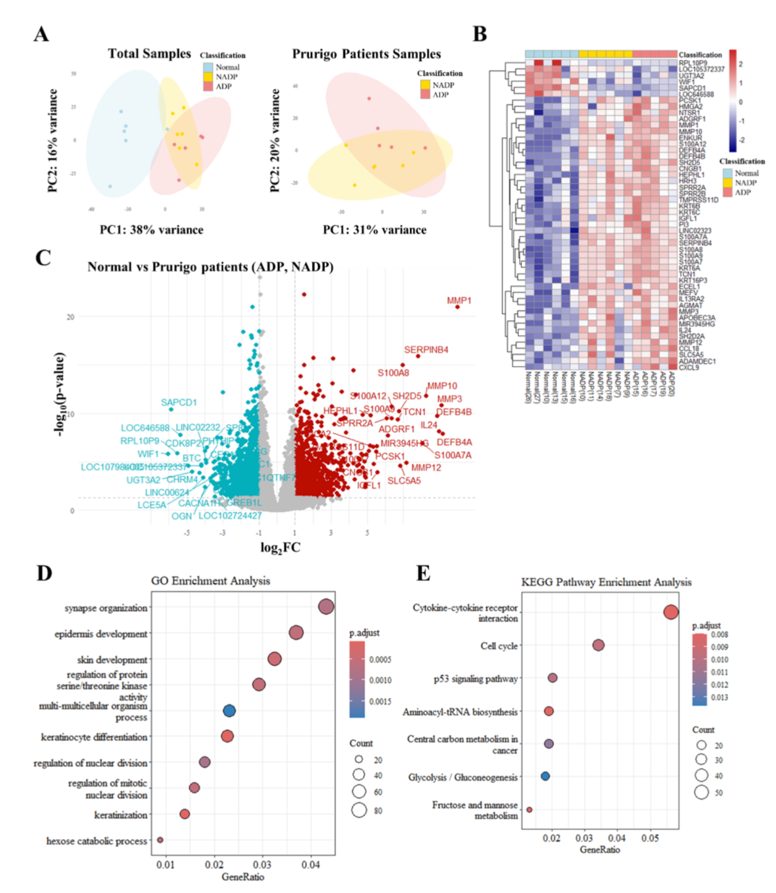
강남성심병원 피부과 김혜원 교수님
분석 데이터
- 소아 아토피 피부 lipidomics, 부위 A/B/C 정보와 임상 중증도 지표가 함께 정리된 site-specific 통합 자료.
- 이후 sensitive skin, prurigo 데이터셋으로 확장, 질환별 차이와 공통 lipid 패턴을 비교 가능한 프레임으로 구성.
분석 목표 및 통계 분석
- 염증 반응과 연결되는 lipid axis 탐색 후, 부위별 변화와 질환 간 공통 signature 도출을 위한 다층 비교 설계.
- fold-change와 limma + empirical Bayes 기반 차이 검정을 우선 수행하고, BH-FDR, Spearman correlation, PCA/UMAP로 신호를 단계적으로 정리.
결과 및 산출물
- 부위별 lipid fold-change 요약표와 Figure 세트를 정리하고, 3질환 통합 자료에서는 unique lipid 248개 중 18개 공통 species 확인으로 질환 간 공통 축 제시.
Case 2. 소아 아토피성 염증 피부 지질체-전사체 통합 분석
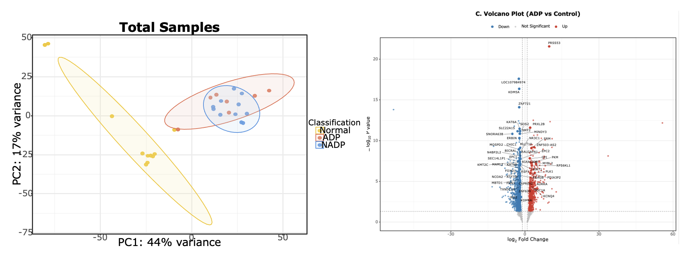
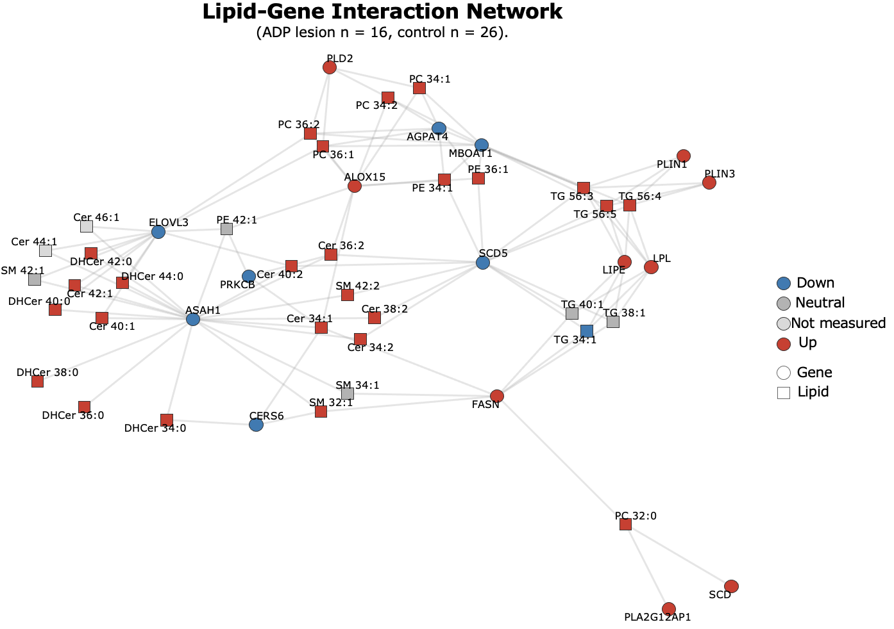
강남성심병원 피부과 김혜원 교수님
분석 데이터
- transcriptome 29샘플, lipid-matched subset, 염증·섬유화 후보 유전자 세트를 함께 묶은 multiomics 확장 자료.
- 피부 표면 lipid 변화와 전사체 수준 염증 경로를 직접 연결해 볼 수 있도록 구성한 matched analysis 자료.
분석 목표 및 통계 분석
- lipidomics에서 관찰된 변화축을 transcriptome과 연결한 뒤, 염증·장벽 관련 후보 pathway 재정렬을 통한 multiomics 근거 보강.
- DESeq2 기반 DEG 산출 후 VST PCA, GO/KEGG enrichment, BH-corrected correlation을 통한 lipid-gene 연결축 재평가.
결과 및 산출물
- 논문용 Figure 1~5 세트와 multiomics correlation 패널을 정리하고,
LAD vs Healthy비교에서는[FDR \< 0.05]유전자 3개 확인 및 후속 검증 후보군 압축.
Case 2 보충 ①. 연구 배경·목표와 분석 데이터
강남성심병원 피부과 김혜원 교수님
연구 배경과 목표
- 소아 아토피·민감피부·결절성 양진은 겉모습은 달라도 만성 가려움과 아토피성 염증을 공통으로 가짐
- 세 질환에 공통된 피부 지질(lipid) 변화가 있는지, 그것이 어느 대사 경로 및 가려움과 연결되는지 규명이 목표
분석 데이터 (세 질환, 자체 측정)
| 질환 | 검체 수 | 환자 / 대조 구성 |
|---|---|---|
| 소아 아토피 | 120 | 환자 20명 × 부위 3곳 |
| 결절성 양진 | 93 | 병변 38 / 정상 26 |
| 민감피부 | 76 | 환자 70(4 유형) / 정상 6 |
분석은 두 갈래로 진행: ⑴ 피부 표면 지질체(lipidomics) 라인, ⑵ 양진 전사체(transcriptome) 라인
사용한 분석 도구 (R package)
- limma: 원래 유전자 발현 분석용으로 개발된 통계 도구로, 지질 수백 개의 환자·정상 차이를 한 번에 안정적으로 검정
- DESeq2: RNA 시퀀싱(전사체) 데이터에서 환자·정상 간 발현이 다른 유전자를 찾는 표준 통계 도구
- data.table · ggplot2: 데이터 정리와 그림 작성
함께 사용한 외부 공개 데이터
- KEGG(Kyoto Encyclopedia of Genes and Genomes, 교토 유전자·유전체 백과사전): 어떤 지질·유전자가 몸속 어느 대사 경로에서 일하는지 정리해 둔 무료 공개 데이터베이스
- 변한 지질을 이 지도에 대입하면 낱개가 아니라 “어느 대사 경로 전체가 움직였는지”로 해석 가능
- 변한 유전자는 GO/KEGG enrichment(기능·경로 농축분석)로 분석. 변한 유전자들이 특정 기능(GO)이나 대사경로(KEGG)에 우연 이상으로 몰려 있는지 통계로 확인해, 어떤 생물학적 과정이 달라졌는지 파악
Case 2 보충 ②. 분석 방법 (1): fold-change와 원자료
강남성심병원 피부과 김혜원 교수님
fold-change(FC, 배수변화)란
- 환자군이 정상 대비 어떤 분자가 몇 배 늘거나 줄었는지를 나타낸 값
- log2로 표기: +1이면 2배, +2이면 4배, −1이면 절반
\[\text{log2FC}=\log_2\!\frac{\text{환자군 평균}}{\text{정상군 평균}}\]
원자료는 “개수(count)” 데이터
- 유전자 발현(전사체)의 원자료는 각 유전자가 몇 번 읽혔는지를 센 개수(count)
- 개수 자료에는 표본마다 측정된 양과 표본 수(N) 정보가 함께 담겨 있음
- 보통 log 변환 후 두 군의 평균을 비교해 배수변화를 계산
예시: 개수 자료에서 배수변화 계산
| 유전자 | 환자군 | 정상군 | 배수변화 |
|---|---|---|---|
| 유전자 X | 120 | 40 | 3배 (log2 +1.6) |
| 유전자 Y | 30 | 60 | 0.5배 (log2 −1) |
- 환자군에서 X는 늘고(증가), Y는 줄어든(감소) 것으로 읽음
Case 2 보충 ③. 분석 방법 (2): limma와 empirical Bayes
강남성심병원 피부과 김혜원 교수님
적은 표본, 많은 분자에서 생기는 검정력 문제
- 표본(환자 수)은 적은데 측정 분자(유전자·지질)는 수백~수천 개
- 개수 자료를 단순 표준화(normalization)만 하면 표본 수(N) 정보가 옅어져, 통계 검정의 힘(power)이 떨어짐
- 분자 하나하나 따로 분산을 추정하면 결과가 불안정
limma의 해결
- limma: 수백~수천 개 분자의 분산 정보를 서로 빌려 와 분산을 안정적으로 추정해, 적은 표본에서도 검정력을 회복
- 원래 유전자 발현용으로 개발됐고 지질 분석에도 널리 사용
| 구분 | 단순 t검정 | limma |
|---|---|---|
| 분산 추정 | 분자마다 따로 | 전체에서 빌려 안정화 |
| 적은 표본 검정력 | 낮음 | 회복 |
empirical Bayes는 함께 따라옴
- empirical Bayes(경험적 베이즈): “정보를 서로 빌려오는” 핵심 기법으로, limma를 쓰면 자동으로 함께 적용됨
\[\tilde{s}_g^{2}=\frac{d_0\,s_0^{2}+d_g\,s_g^{2}}{d_0+d_g}\]
개별 분산을 그 분자 하나로만 추정하면 불안정. limma는 개별 분산 \(s_g^2\) 를 전체 분자의 공통 분산 \(s_0^2\) 와 가중평균으로 섞어 더 안정적인 분산 \(\tilde{s}_g^2\) 를 산출(\(d_0\)·\(d_g\) 는 두 정보의 가중치). 표본이 적을수록 공통 분산에 더 의존
그 외 단계 (요약)
- BH-FDR(거짓발견율): 수백 개 동시 검정의 우연 양성을 보정. q < 0.05면 신뢰
- PCA(주성분분석): 수백 개 분자를 2~3개 축으로 압축해 환자군·정상군이 갈라지는지 확인
Case 2 보충 ④. 분석 방법 (3): KEGG pathway 분석
강남성심병원 피부과 김혜원 교수님
KEGG란
- KEGG(Kyoto Encyclopedia of Genes and Genomes): 유전자·대사물질이 몸속에서 어떤 대사 경로로 연결되는지 그림 지도로 정리한 무료 공개 데이터베이스
- 예: ceramide는 sphingolipid metabolism(스핑고지질 대사) 경로에 속함
경로 단위 해석에 사용
- 변한 유전자·지질을 낱개로 보지 않고 “어느 경로가 통째로 움직였나”로 해석
- enrichment(농축분석): 변한 목록이 특정 경로에 우연 이상으로 몰려 있는지 통계로 검정
| KEGG 경로 | 이 연구의 변화 |
|---|---|
| Sphingolipid metabolism | Cer·DHCer 증가 |
| Glycerolipid metabolism | TG 감소 |
| Fatty acid metabolism | FFA 변화(아토피) |
R 패키지로 분석 가능
- clusterProfiler:
enrichKEGG·enrichGO로 경로 농축분석,gseKEGG로 순위기반 분석 - KEGGREST: KEGG 경로·유전자 정보를 내려받아 조회
- pathview: KEGG 경로 그림 위에 결과(증가·감소)를 색으로 표시
- 이 연구에서는 변한 지질을 sphingolipid·glycerolipid 등 KEGG 경로에 매핑해 경로 단위로 해석
Case 2 보충 ⑤. 결과 ⑴ 지질체(lipidomics) 라인
강남성심병원 피부과 김혜원 교수님
핵심 결과: Ceramide(세라마이드) 증가
- Ceramide(세라마이드): 피부 장벽을 이루는 대표 지질로, 피부 방어막의 핵심 성분
- 보통 아토피는 장벽 ceramide가 줄어 건조한데, 표면 지질에선 오히려 증가(새로 만드는 작용인 신생합성이 활발해졌다는 뜻)
- 특히 Cer 34:1이 아토피·양진에서 확실히 증가
| 질환 | 유의 지질 수 | 대표 변화 (log2FC) |
|---|---|---|
| 소아 아토피 | 11종 | Cer 34:1 +0.94 · FFA 증가 |
| 결절성 양진 | 47종 | Cer 34:1 +3.08 · TG 감소 |
| 민감피부 | 2종 | TG 62:4·64:4 감소 |
- FFA(유리지방산), TG(중성지방), Cer(세라마이드)
- log2FC가 +1이면 2배, +3.08이면 약 8.5배 증가
Case 2 보충 ⑥. 결과 ⑵ 전사체(transcriptome) 라인
강남성심병원 피부과 김혜원 교수님
전사체 차등발현 분석
- 양진 환자 29명(정상 11·아토피양진 7·비아토피양진 11)의 유전자 발현(전사체) 분석
- DESeq2: RNA 발현이 환자·정상 간 다른 유전자(DEG)를 찾는 표준 통계 도구. 이어 GO/KEGG enrichment로 염증·장벽 경로 확인
지질–유전자 연결 (multiomics)
- 표면 ceramide 변화를, 그 지질을 만들고 분해하는 핵심 유전자와 연결
| 핵심 유전자 | 역할 |
|---|---|
| CERS6 | ceramide 합성 |
| ASAH1 | ceramide 분해 |
| ELOVL3 | 지방산 사슬 연장 |
- 지질·유전자가 대부분 다른 환자라 개인 연결이 아니라 변화 방향의 일치로 해석
Case 2 보충 ⑦. 종간 검증과 통합 모델
강남성심병원 피부과 김혜원 교수님
마우스에서도 같은 변화 (cross-species 검증)
- 사람뿐 아니라 아토피 마우스 피부에서도 Cer 34:1 증가
- 사람·마우스에서 같은 방향으로 재현돼, 우연이 아니라 종을 넘어 보존된 변화일 가능성
| Cer 34:1 | 변화 | 유의성 |
|---|---|---|
| 마우스 아토피 | 3.6배 | p = 0.002 |
| 사람 소아 아토피 | 1.9배 | FDR 0.004 |
| 사람 결절성 양진 | 8.5배 | FDR 0.001 미만 |
통합 모델: Neuroimmune–Lipid Crosstalk(신경–면역–지질 상호작용)
ceramide 상승이 면역세포와 가려움을 전달하는 감각신경을 자극해 만성 가려움을 일으킨다는 통합 가설
연구의 의의
- 세 질환을 관통하는 공통 지질 축(ceramide)을 제시
- 가려움 조절을 위한 치료 표적 후보로 연결 가능
Case 3. STING1-lysosome 발현량 난소암 환자 생존 분석
일산백병원 진단검사의학과 김지예 교수님
분석 데이터
- 내부 GeoMx spatial transcriptomics와 외부 TCGA/GTEx 난소암 자료를 함께 사용한 생존·분자 통합 자료.
- 단일 유전자 비교를 넘어, STING1-lysosome 관련 245개 유전자 모듈까지 확장 가능한 구조라는 점이 핵심 특징.
분석 목표 및 통계 분석
- STING1-lysosome 축의 예후 연관성 탐색 후, 모듈 수준 재배선과 외부 코호트 검증을 통한 기능 후보 도출 목적의 분석 설계.
- Kaplan-Meier, Cox로 예후 신호를 점검한 뒤, DESeq2, GO/KEGG/PPI, eigengene correlation, paired Wilcoxon으로 모듈 수준 해석을 확장.
결과 및 산출물
- 생존곡선, volcano, module network, eigengene correlation 구축, PFS는 event 부족으로 제한하여 OS 중심 해석과 외부 후보유전자 검증 축 명확히 정리.
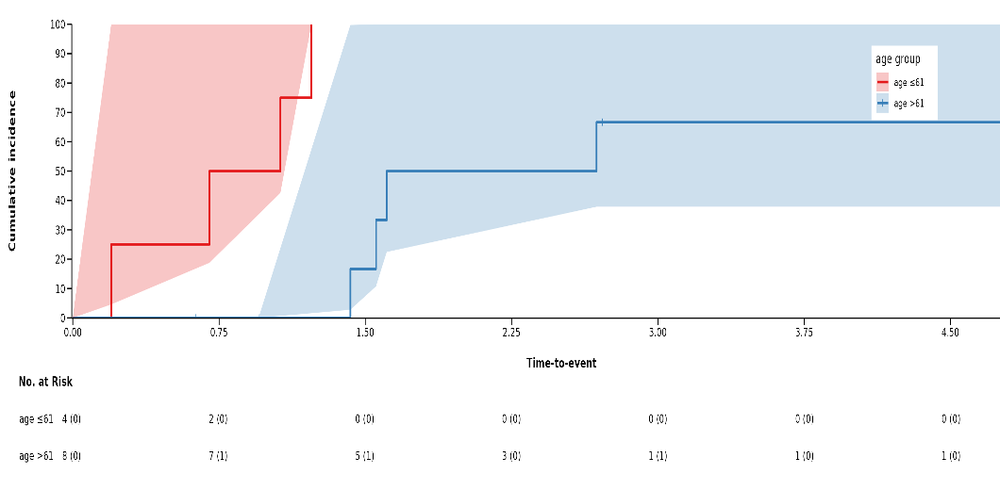
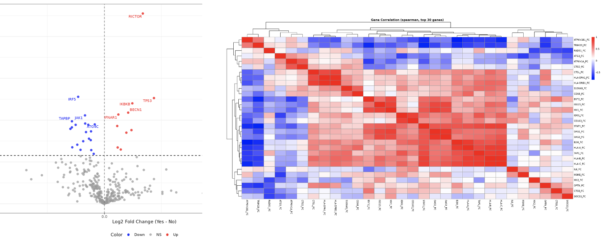
Case 4. COPD 환자 사망 연관 SNP 탐색을 위한 GWAS 분석
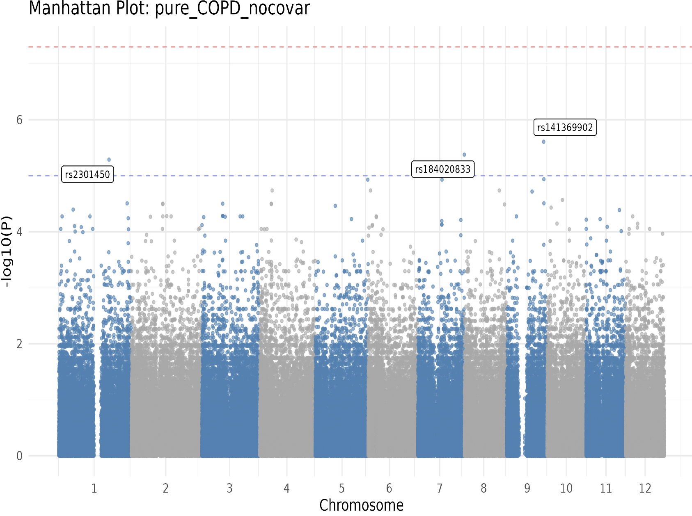
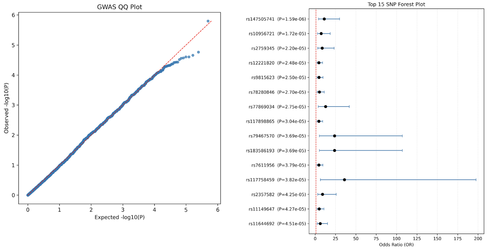
동탄성심병원 호흡기내과 송진화 교수님
분석 데이터
- KOCOSS COPD 코호트 중 SNP 데이터가 있는 환자 대상, 임상 기본정보와 mortality outcome을 통합한 유전연관 분석 자료.
- 전체 코호트뿐 아니라
pure_COPD,TB_COPD,Asthma_COPD,BE_COPDphenotype별 하위군을 나눠 subtype-specific signal 탐색.
분석 목표 및 통계 분석
- COPD 환자의 mortality 연관 유전변이를 탐색, 임상 phenotype에 따른 신호 변경 탐색을 위한 subtype-specific GWAS 설계.
- Table 1와 결측률 점검, PLINK logistic GWAS를
pure_COPD,TB_COPD,Asthma_COPD,BE_COPD하위군별 반복 수행, covariate-adjusted model을 통해 age, sex, BMI, baseline FEV1 보정 결과 통합 비교.
결과 및 산출물
- phenotype별 baseline 특성표, 보정 전후 GWAS, top SNP 요약표 정리 및 하위군별 signal 비교를 위한 Manhattan plot 도출.
- COPD 아형별 mortality-associated SNP 후보를 분리 후 해석 가능 구조를 확립, 후속 replication 또는 기능 해석을 위한 lead SNP 정리.
Case 5. 방광암 및 폐암 진단 바이오마커 모델
시선바이오머티리얼즈 연구팀
분석 데이터
- 방광암 methylation marker 자료와 폐암 MPR panel, 외부검증용 test set을 함께 사용한 멀티오믹스 데이터.
- 원 marker 값뿐 아니라 control 기준 percentile feature를 추가 생성.
분석 목표 및 통계 분석
- 적용 가능한 diagnostic marker 조합 탐색 후, 설명 가능한 기준값과 배포형 예측 도구까지 연결하기 위한 모델링 설계.
- ROC/AUC, logistic regression으로 기본 성능을 확인 및 percentile thresholding, 10-fold CV, LASSO, Random Forest 결합, 후보 모델 압축.
결과 및 산출물
- ROC 패널, cutoff 기반 모델, 배포형 예측 앱 연결, AUC와 best-threshold, sensitivity/specificity, PPV/NPV,
95% sensitivity 기준 specificity제시.
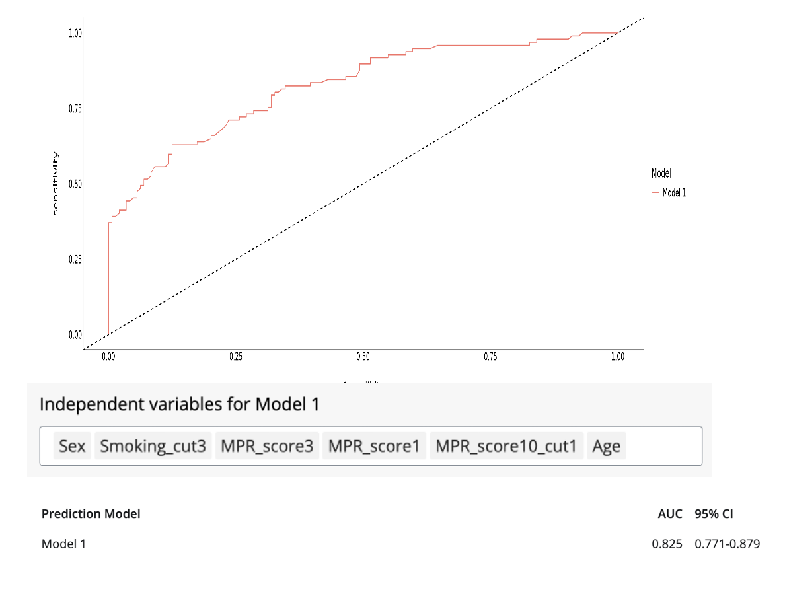
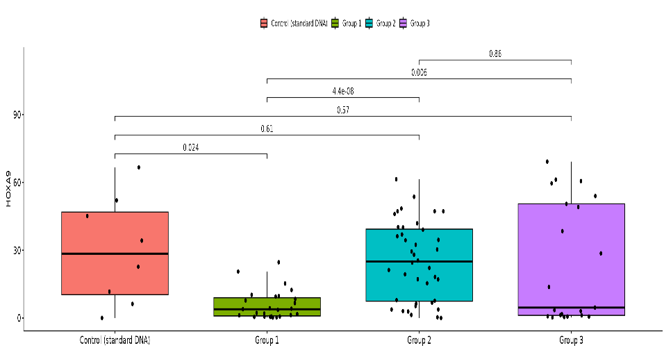
Case 6. 직장암 수술전 항암방사선용법 반응 유전자 분석
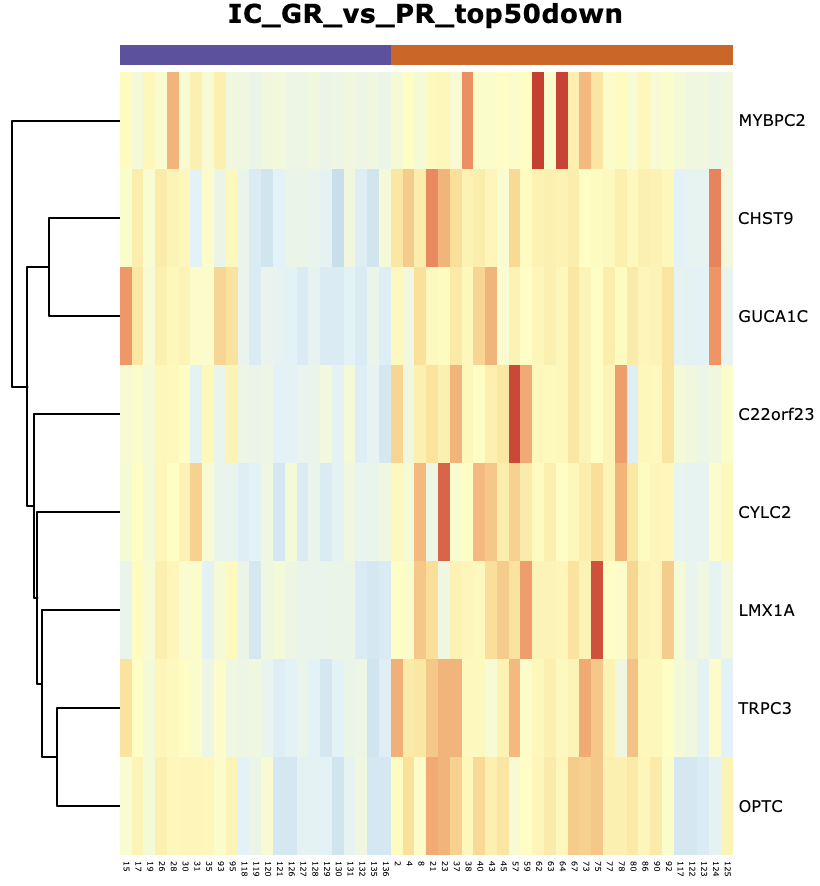
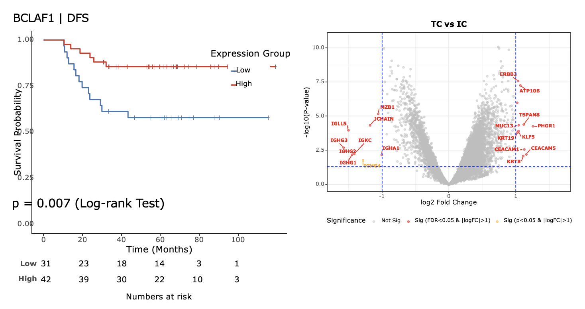
동탄성심병원 신은 교수님
분석 데이터
- 직장암 CCRT 반응군의 TC/IC spatial transcriptomics와 외부 검증 코호트 통합 데이터셋.
- 반응군과 생존 변수를 초기 단계에서 함께 정의하여, discovery와 validation 진행.
분석 목표 및 통계 분석
- 반응군 차이를 설명하는 DEG 선별 후, 생존 및 외부 코호트 예측 가능성까지 이어지는 후보유전자 축 도출 목표의 설계.
- 반응군 정의 후 limma + eBayes 기반 DEG 분석, heatmap/volcano 시각화, maxstat + Kaplan-Meier, ROC/Youden 순 확장.
결과 및 산출물
- DEG 통합표와 생존·검증 Figure를 한 세트로 정리하고, 생존 관련 결과는 69행(유니크 61유전자), 외부 binary validation 결과는 타깃별 1,071행 규모로 저장되어 후속 선별.
Case 7. 피부 장벽 및 혈관 반응과 피부 표면 지질체 상관 분석
강남성심병원 피부과 박진서 교수님
분석 데이터
- 민감피부 환자군과 대조군의 TEWL, SCH, erythema, porphyrin, SS-10, lipid species를 함께 측정한 통합 자료.
- 표본 수 대비 변수 수가 큰 high-dimensional 구조로, 단일 p-value보다 패턴 탐색과 후보 압축이 중요한 데이터셋.
분석 목표 및 통계 분석
- 피부 장벽·혈관 반응 지표와 lipid pattern 사이의 연결 구조 탐색 후, symptom domain별 후보 지질 축 도출을 위한 exploratory 분석 설계.
- Spearman correlation과 linear regression으로 1차 후보를 점검한 뒤, PCA, PLS-DA, PERMANOVA, network analysis, LASSO로 탐색 신호를 압축.
결과 및 산출물
- correlation heatmap과 symptom-lipid network를 구축하고, SS-10 item 대 112개 lipid 상관에서는
FDR q \< 0.05통과 lipid 부재, patient-control PLS-DA의PERMANOVA P = 0.753, R² = 0.007exploratory layer 중심 해석 정리.
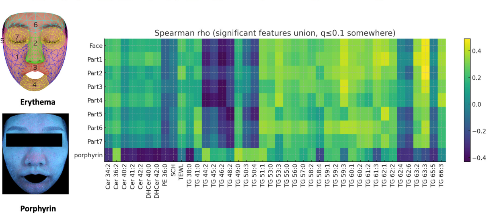
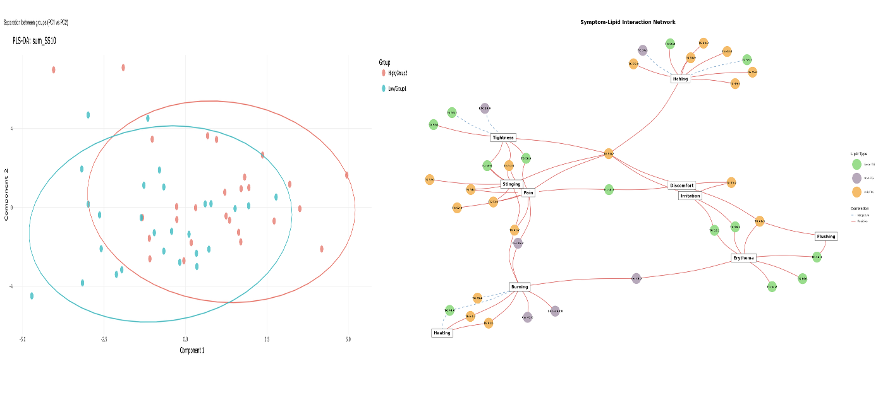
Case 7 보충 ①. 연구 배경·목표와 분석 데이터
강남성심병원 피부과 박진서 교수님
연구 배경과 목표
- 민감피부(sensitive skin)는 자극에 따가움·화끈거림 같은 불편한 감각이 나타나지만, 겉으로 보이는 병변이 없어 객관적으로 진단하기 어려운 질환임
- 진단이 환자의 주관적 호소에만 의존하므로, 증상을 뒷받침할 객관적 지표가 필요함
- 피부 표면 지질이 증상·피부장벽·홍조·포피린 같은 임상 지표와 연관되는지 탐색하고, 증상을 설명할 지질(biomarker, 생체표지자)을 찾는 것이 목표임
분석 데이터 (자체 측정)
- 민감피부 환자 69명, 대조군 6명 (대조군은 임상 점수가 없어 연관 분석에는 환자만 사용함)
- 피부 표면 지질 112종 (tape stripping으로 채취 후 LC-MS/MS로 정량)
- LC-MS/MS(액체크로마토그래피-질량분석): 섞여 있는 지질을 종류별로 분리(LC)한 뒤 질량으로 정확히 식별·정량(MS)하는 표준 측정 방법
| 임상 지표 | 의미 |
|---|---|
| TEWL · SCH | TEWL(경피수분손실, 높을수록 장벽 약함)·SCH(각질층 수분도, 높을수록 촉촉) |
| SS-10 | 민감피부 증상 설문(10항목) |
| 홍조(erythema) | 얼굴 사진 분석(전체·부위별) |
| porphyrin(포피린) | 산화된 피지량(UV 사진) |
Case 7 보충 ②. 분석 방법 (1): 기본 연관과 군집 탐색
강남성심병원 피부과 박진서 교수님
기본 분석부터 시작해, 결과가 약하면 더 정교한 방법으로 단계적으로 넘어감.
① 지질–임상 상관: Spearman correlation(스피어만 상관분석)
- Spearman correlation은 두 값의 순위(크기 순서)가 함께 오르내리는 정도를 −1에서 +1 사이로 나타내는 분석임. +1이면 같은 방향, −1이면 반대 방향, 0이면 관계 없음. 순위만 쓰므로 극단값에 덜 민감함
- 각 지질과 각 임상 지표의 상관을 구하고, 그 값을 색으로 칠한 heatmap(열지도)으로 한눈에 표시함
- 결과: 다중비교 보정 후 FDR을 통과하는 지질이 없었음
② 군집 탐색: PCA(Principal Component Analysis, 주성분분석)
- 지질 112종 전체를 2~3개 축으로 압축해, 환자들이 지질 패턴으로 무리 지어지는지 확인함
- 결과: 뚜렷한 그룹 분리가 나타나지 않았음
Case 7 보충 ③. 분석 방법 (2): 그룹 비교와 biomarker 탐색
강남성심병원 피부과 박진서 교수님
③ 그룹 차이 강조: PLS-DA + PERMANOVA
- PLS-DA(부분최소제곱 판별분석): 두 그룹(예: 증상 높은 군·낮은 군)을 미리 정해 주고, 그 둘을 가장 잘 구분하는 지질 조합을 찾아 주는 방법임. 차이를 도드라지게 보여주는 대신, 실제로 없는 차이도 있어 보이게 만들 위험이 있음
- PERMANOVA(순열 분산분석): 두 그룹의 지질 조성 전체가 통계적으로 정말 다른지를 검정하는 방법임. 자료를 무작위로 여러 번 섞어 비교해, PLS-DA가 강조한 차이가 진짜인지 확인함(기여 지질은 VIP 점수로 추림)
- 결과: 어느 임상 지표로 나눠도 두 군의 지질 조성에 유의한 차이가 없었음
④ 연결 구조 시각화: network analysis(네트워크 분석)
- network analysis로 증상과 지질을 점·선으로 이어, 어떤 증상이 어떤 지질과 묶이는지 보여줌
- 결과: 보정 전 기준에서 증상끼리 비슷한 것이 묶이고 중성지방(TG)이 자주 등장함(탐색적 참고)
⑤ biomarker 후보 압축: LASSO(라쏘 회귀)
- LASSO(라쏘 회귀)는 영향력 없는 지질을 0으로 눌러 소수만 남기는 머신러닝으로, 변수가 표본보다 많을 때 유용함
- 결과: 자극감·따가움·화끈거림 등 일부 증상에서만 1~8개 후보가 선택되고, 나머지 증상에서는 없었음
⑥ 교차 확인: 환자 대 대조, 정규화 대 원자료
- 환자·대조 비교와 정규화·원자료 분석으로 결과가 전처리 방식 때문은 아닌지 점검함
- 결과: 원자료에서도 분리되지 않아, 분리가 안 되는 것이 전처리 탓이 아님을 확인함
Case 7 보충 ④. 결과와 분석 전략상의 교훈
강남성심병원 피부과 박진서 교수님
통계적으로 확정된 연관은 없음
- 어떤 지질도 FDR q < 0.05를 통과하지 못했음
- 환자와 대조군의 지질 조성도 차이가 없었음
탐색적으로 관찰된 경향
- LASSO에서는 자극감·따가움·화끈거림 등 일부 증상에서 1~8개 지질이 후보로 선택됨
- 증상끼리는 비슷한 것들이 묶였고(예: 화끈거림·열감), 중성지방(TG)이 반복해서 나타남
표본보다 변수가 많은 문제(n < p)
- 표본은 적은데 지질은 112종으로 많아(특히 대조군 6명), 다중비교 보정 후 유의성 확보가 어려움
- 기본 상관·회귀에서 유의한 연관이 없으면 더 복잡한 방법으로도 유의한 결과를 못 만듦
유의한 결과가 없을 때의 원칙: 한계(표본 수, 다중비교)를 함께 제시하고, 무리한 추가 분석으로 없는 결과를 만들지 않음
Case 8. qPCR miRNA 기반 폐암 진단 모델 연구
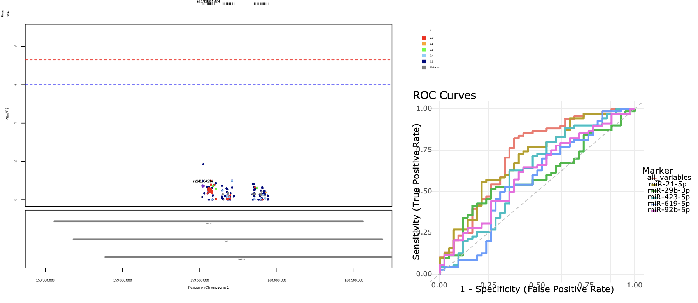
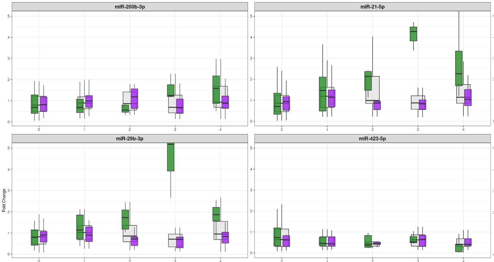
건국대병원 호흡기내과 이계영 교수님
분석 데이터
- qPCR miRNA, 연령, 흡연력, 병기, 실험 라운드 정보를 포함한 멀티오믹스 폐암 진단 자료.
- 라운드 차이와 샘플 정합화 이력이 함께 남아 있어, marker 성능 비교와 데이터 정제 이슈를 동시에 다룰 필요성.
분석 목표 및 통계 분석
- 단일 miRNA 유의성과 다중 marker panel 성능을 분리 평가한 뒤, 임상변수 보정 모델까지 확장하여 screening용 조합 후보 압축 설계.
- qPCR 정규화 후 Table 1, boxplot + pairwise test, logistic ROC/AUC, UpSet combination search, LASSO, Random Forest 순으로 비교 평가 진행.
결과 및 산출물
- 8개 후보 miRNA에서 3·4·5-marker 조합까지 비교하는 ROC Figure와 Interactive 웹앱으로 연결하고, 최종 AUC·민감도·특이도는 raw qPCR/pins 자료 기준 재계산.
Case 9. 공단·심평원 빅데이터 분석
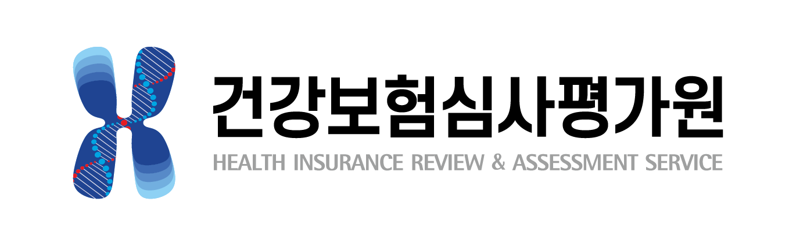
대한민국 공단(KNHIS)·심평원(HIRA) 빅데이터는 전 국민 단위의 건강검진, 소득, 사망, 데이터를 포함.
최근 5년간 Diabetes Care, International Journal of Epidemiology, JAMA Network Open, JAMA Pediatrics 등에 NHIS/HIRA 기반 연구가 지속적으로 게재
공단/심평원 데이터 활용 및 분석 사례
사례 1
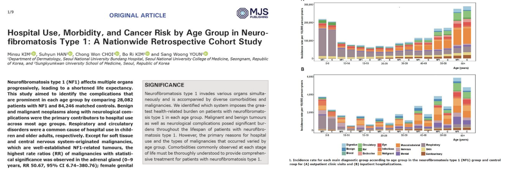
분당서울대병원 피부과 김보리 교수님
제1형 신경섬유종증 환자의 연령대에 따른 주요 합병증 발생 변화 연구
Acta Dermato-Venereologica (IF 4.3) 게재
사례 2
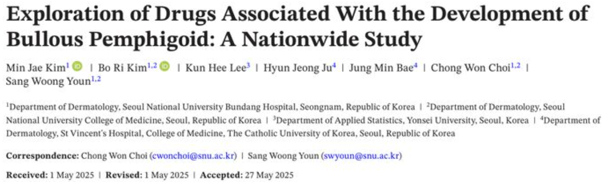
분당서울대병원 피부과 김보리 교수님
수포성 천포창(Bullous Pemphigoid, BP)의 발생과 연관된 위험 약물 규명
The Journal of Dermatology (IF 2.7) 게재
사례 3
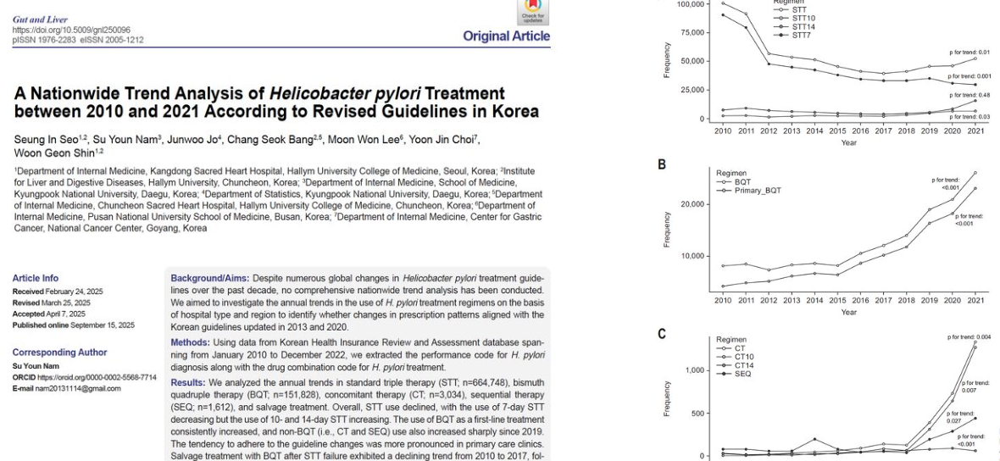
강동성심병원 소화기내과 서승인 교수님
H. pylori 제균치료의 실제 처방 경향의 전국적 조사
Gut and Liver (IF 3.2) 게재
Case 9. 공단데이터 결합데이터 분석 사례
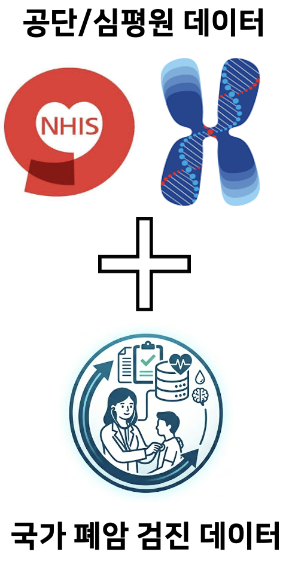
서울대학교병원 영상의학과 김형진 교수님
사례 1 국가폐암검진에서 발견된 위양성 결과와 사후 관리가 향후 폐암 발생률과 사망률에 미치는 영향 분석
Journal of Internal Medicine (IF 9.2) 게재
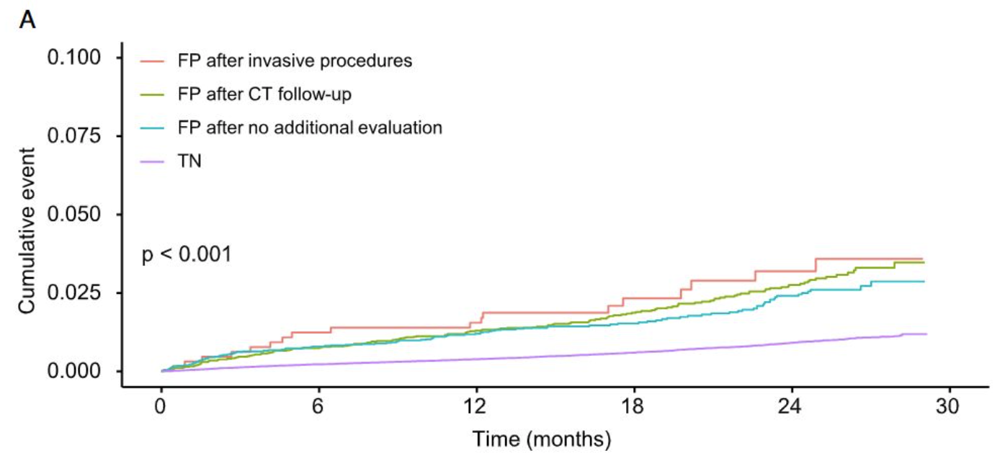
전체 표본 수235,753명 대상(2019 ~ 2021)
사례 2 국가폐암검진에서 발견된 간질성 폐 이상(ILA, Intersitial Lung Abnormalities)의 예후적 가치 분석
The Journal of Dermatology (IF 2.7) 게재
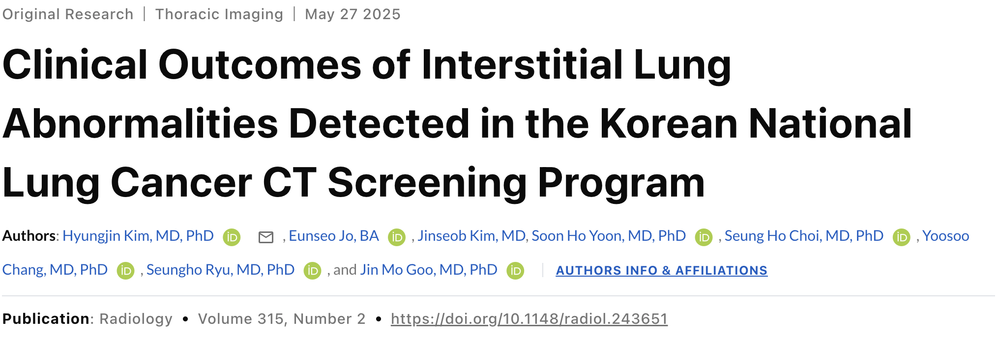
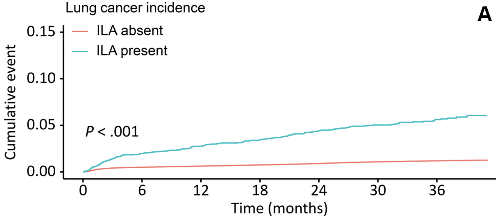
전체 표본 수125,600명 대상(2019 ~ 2020)
국가폐암검진 CT 판독 데이터와 건강보험공단 국민 데이터을 결합한 복합적 의료 분석 사례 (기본 소득, 처방 및 확진, 생존여부 등)
연구자 옆에는 차라투

Contact
office@zarathu.com | +82 70-7954-3712
www.zarathu.com | community.zarathu.com | openstat.ai
Zarathu Co., Ltd.